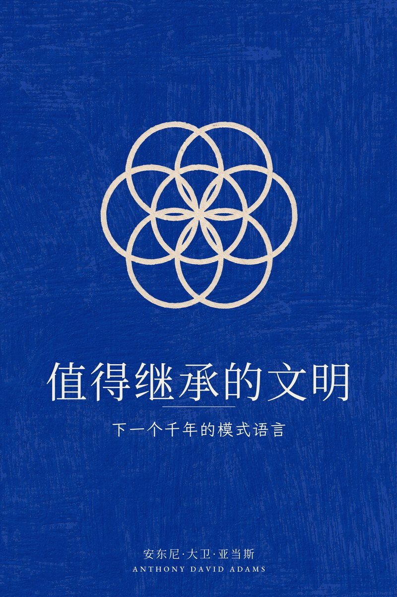
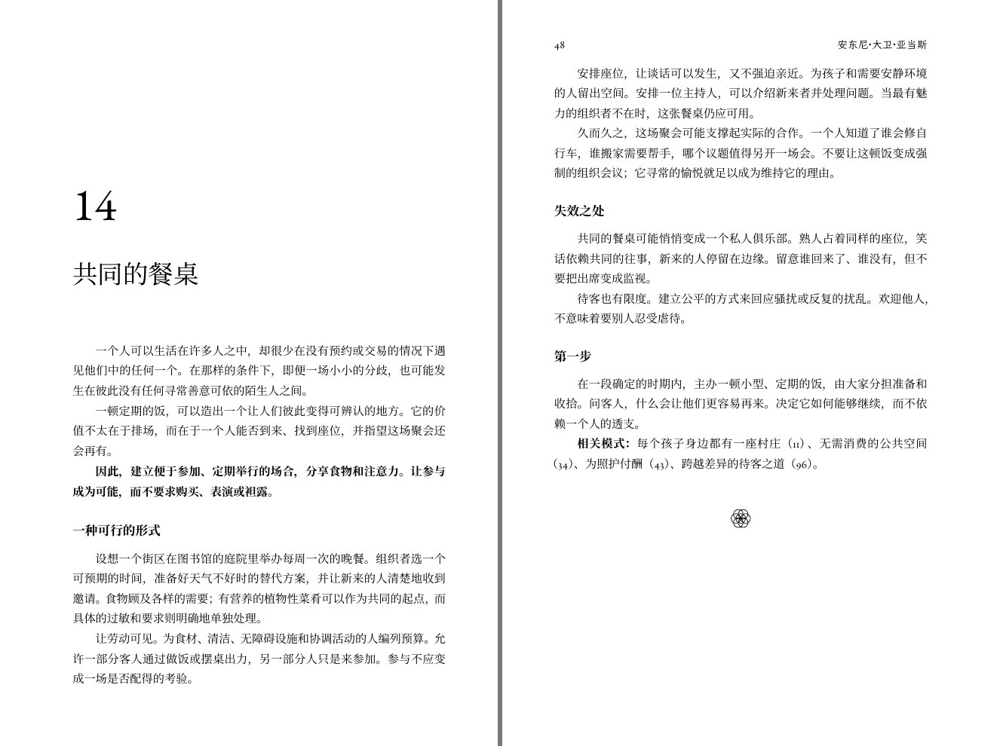
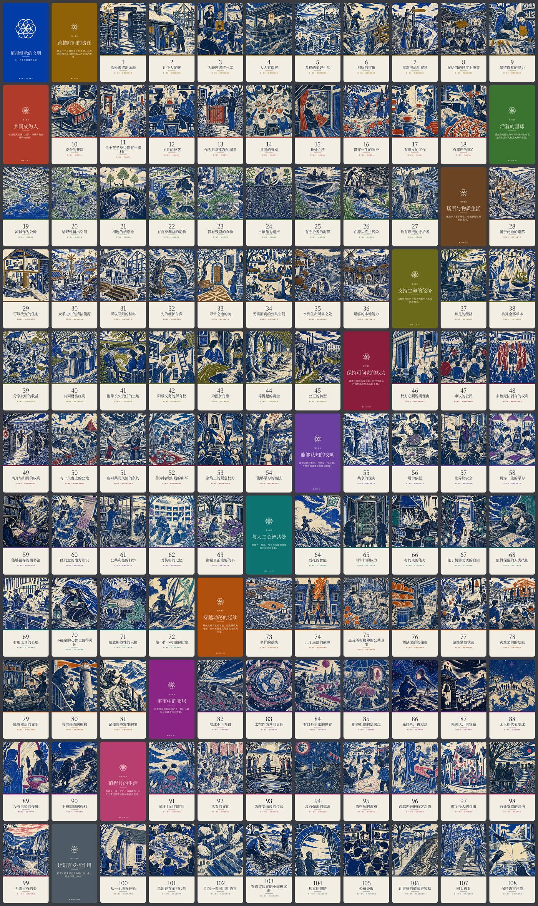
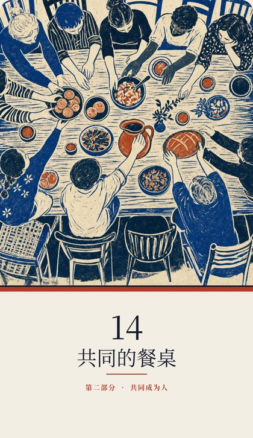
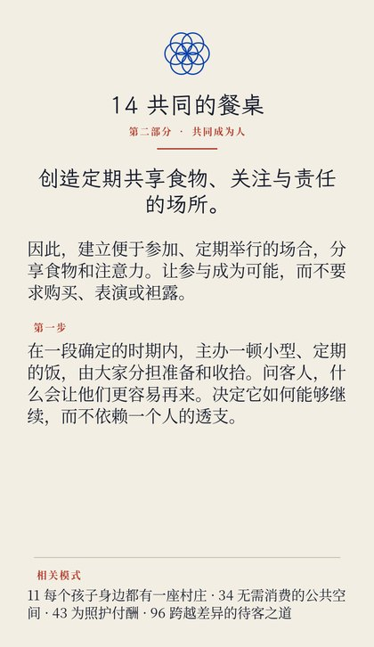
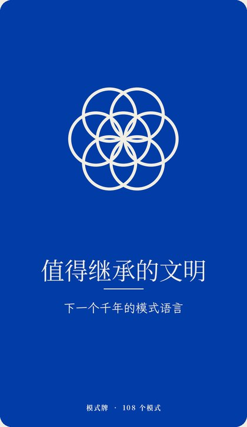

一本书 · 一副牌 · 一位教练
下一个千年的模式语言
如果我们希望一千年后生命依然繁荣，今天应该建造什么？一百零八个模式，每一个都是一个反复出现的问题和一种可用的回应，从孩子的第一个家，到与其他心智接触的可能。
十二个部分，一百零八个模式，每一个都从真实的地方开始。
一个孩子需要一处安全的玩耍之地。一条河需要可以流动的空间。一个强大的人工智能需要在所有权更替之后依然有效的限制。一个文明需要记住自己学到了什么，也需要知道这些教训何时不再适用。
受克里斯托弗·亚历山大《模式语言》启发，本书为一个繁荣的文明提出了 108 个模式。每个模式都指出一个反复出现的问题，提出一种可用的回应，权衡其代价，并与其他模式相连。从一个家庭、一家公司、一个街区或一个流域开始，沿着这些联系一路向外，直到行星级的制度、人工心智、地球之外的定居点，以及与其他智慧生命接触的可能。

全书以 PDF 形式免费提供，采用允许非商业复制与改编（须署名）的许可协议。纸质版正在筹备中。下载最新版本。中文译本据英文第二版译出；如发现译文可改进之处，欢迎在项目仓库提出。
108 个模式做成塔罗牌尺寸的卡片：正面是图画与模式名称，背面是模式要点。



中文版与英文版共用同一套图画，文字全部为中文。全套 121 张：108 个模式、12 张部分牌和 1 张题名牌。首批印制正在筹备中。

一位读过全部 108 个模式的教练。可以用中文提问。
教练依据书中原文作答，并告诉你它引用的是哪个模式。免费使用，与书末和封底印制的二维码相同。